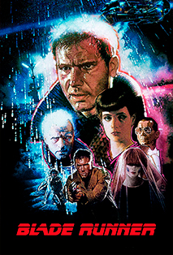
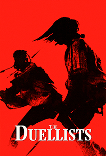
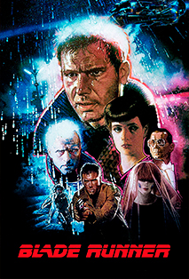
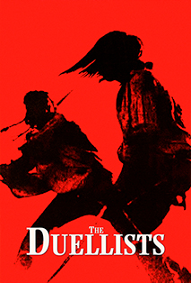
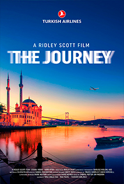
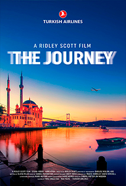

Ridley Scott
Edad: 81
Email: scottythecrazy@gmail.com
Website: www.scottfree.com

Ridley Scott
Edad: 81
Email: scottythecrazy@gmail.com
Website: www.scottfree.com
El fue a la escuela de Grangefield Grammar School, se la pasaba jugando al futbol la mayoria del tiempo y casi nunca estidiaba.Sus notas no eran las mejores .
El college lo hizo en West Hartlepool College ya que se tuvo que mudar por el trabajo de su padre, acá estudio diseño y obtuvo un diploma muy importante.
En su epoca universitaria estudio en Royal College of Art en Londres. Acá contibuyo a la revista universitaria ARK y ayudando a establecer el Departamento de Cine dentro de la institución académica. Para su último show, hizo un cortometraje en blanco y negro, Boy and Bicycle, protagonizado por su hermano menor y su padre
 



 

Won
Nominated
Won
Nominated
Won